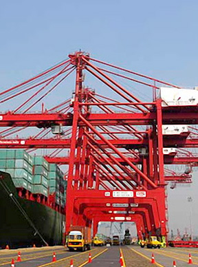

- Products -
Transportation System
Trucking/Transport Management System was developed with a technologically advanced inland container transport planning system, the application enables transportation company to monitor the truck movement, to manage customer bookings and invoicing, to do efficiency equipment planning, to control fuel usage and inventory, to provide complete visibility and control of all cost and income.

- Functions &Key Benefits
- Master data การตั้งค่าระบบ สามารถตั้งค่าการคำนวณน้ำมันของรถแต่ละคัน กำหนดราคาน้ำมันต้นทุน กำหนดราคาน้ำมันที่ใช้อ้างอิงกับการคิดค่าขนส่ง กำหนดเส้นทาง ระยะทาง ข้อมูลลูกค้า ข้อมูลของรถแต่ละคัน และข้อมูลอื่นๆ ที่ใช้ในระบบ
- Quotation สามารถสร้างใบเสนอราคาในระบบ, กำหนดราคาขายและต้นทุนเพื่อให้ระบบคำนวณค่าใช้จ่ายให้โดยอัตโนมัติเมื่อมีการรับ งานลูกค้า และคำนวณต้นทุนและกำไรในแต่ละ order
- Order entry สามารถสร้าง booking ได้ทั้งแบบ single trip, multiple trip กำหนด location และ area ได้
- Cost sheet สรุปค่าใช้จ่ายที่เรียกเก็บจากลูกค้า ต้นทุนน้ำมัน ค่าใช้จ่ายต่างๆ และผลกำไรสำหรับแต่ละ order
- Equipment planning สามารถวางแผนการจัดการขนส่ง การจัดรถสำหรับแต่ละ order โดยระบบจะแสดงข้อมูลที่เป็นประโยชน์สำหรับการขนส่ง เข่น รายละเอียด order ที่ต้องทำการขนส่งสามารถเลือกดูได้หลากหลายรูปแบบตามความต้องการ แสดงทะเบียน รถ,chassis และคนขับที่ว่างอยู่ แสดงตำแหน่งของรถแต่ละคันที่กำลังปฏิบัติงานอยู่ขณะนั้น
- Job order สามารถออกใบปฏิบัติงานให้พนักขับรถได้ ระบบสามารถคำนวณน้ำมันที่ต้องใช้ในแต่ละใบงานปริมาณน้ำมันที่ต้องจ่ายเพิ่มจากปริมาณน้ำมันคงเหลือในถังของคนแต่ละคัน
- Fuel inventory สามารถควบคุมการเบิกจ่ายน้ำมันจากสถานีน้ำมันได้ถูกต้องตาม job order ในกรณีที่มีสถานีน้ำมันของตนเอง
- Driver allowance adjustment การเบิกจ่ายเงินของพนักงานขับรถสำหรับ ค่าใช้จ่ายที่นอกเหนือจากที่กำหนดไว้ในการตั้งค่าระบบ เช่น ค่าปะยาง ค่านำมันที่เติมข้างนอกในกรณีที่ไม่ได้เติมในสถานีน้ำมันของตัวเอง
- Unbilled order สามารถเรียกดูค่าใช้จ่ายที่ค้างชำระจากลูกค้าได้หลากหลายแบบ เช่น ตามวันที่ปฏิบัติงาน ตาม การปิด order ตามชื่อลูกค้า ตาม charge code เป็นต้น
- Customer invoice การออกใบแจ้งหนี้ลูกค้า สามารถตั้งค่าการออกใบแจ้งหนี้อัตโนมัติได้
- Inquiry การค้นหาข้อมูลในระบบ
- Accident record บันทึกรายงานการเกิดอุบัติเหตุของรถแต่ละคัน
- Report สามารถเรียกดูรายงานได้หลากหลายรูปแบบทั้งในส่วนของ operation, accounting และ management report